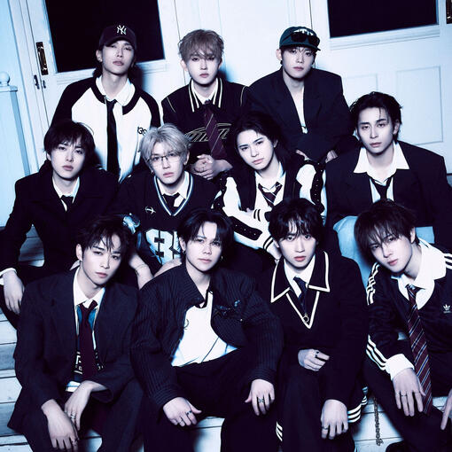

Sorter for LAPONE songs. Pick which groups, song types, or years you'd like to sort from, then hit the Start button.
Click on the song you like better from the two, or tie them if you like them equally or don't know them.
Keyboard controls during sorting: ‣ H/← (pick left) ‣ J/↓ (undo) ‣ K/↑ (tie) ‣ L/→ (pick right) ‣ S (save progress)
Before sorting: ‣ S/Enter (start sorting) ‣ L (load progress).
1 / 2 / 3 always correspond to the first/second/third buttons.